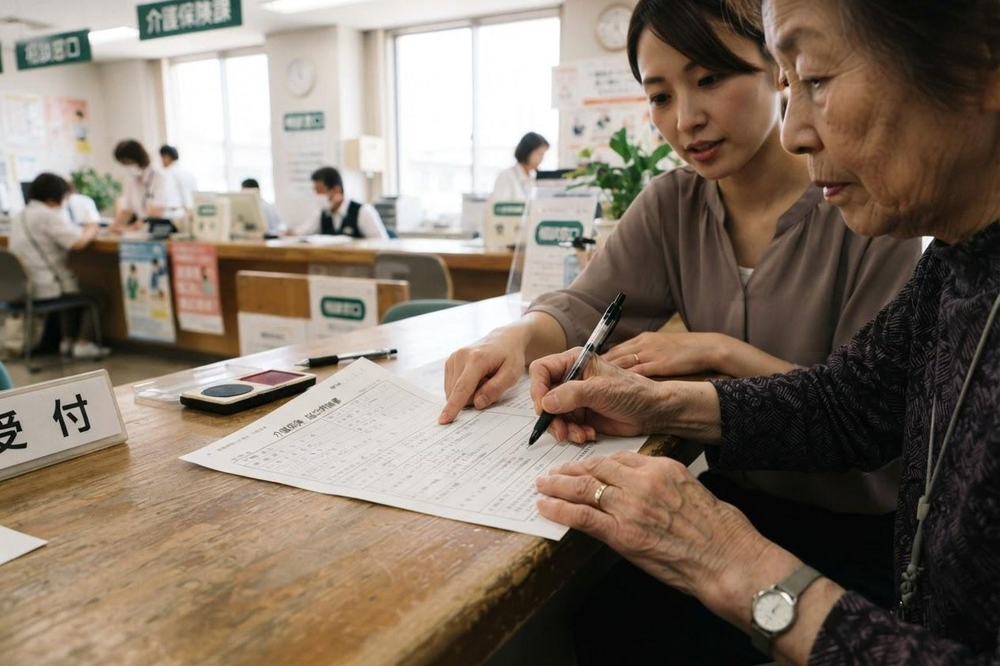

親の介護保険を申請したいのですが、何から始めればよいですか？
A. 回答まずお住まいの市町村に「要介護（要支援）認定」の申請をします。倉敷市の場合は介護保険課、または各支所が窓口です。申請はご本人やご家族のほか、居宅介護支援事業所や高齢者支援センターに代行してもらうこともできます。結果は原則として申請から30日以内に届きます。認定の効力は申請した日までさかのぼるため、急ぐ場合は結果を待たずにサービスを使い始めることもできます。

申請から結果までの流れ
- 申請する：介護保険被保険者証を持って市の窓口へ。申請書には主治医の氏名と最後に受診した月を書く欄があるため、医療機関名と主治医名がわかるものをお持ちください。ご本人からの申請に限り、マイナンバーカードを使った電子申請もできます。
- 認定調査を受ける：市の調査員がご自宅などを訪問し、ご本人の心身の状況をうかがいます。
- 主治医意見書が作成される：市から主治医へ直接依頼が届きます。ご家族が取りに行く必要はありません。
- 審査・判定：調査結果と意見書をもとに、介護認定審査会が判定します。
- 結果が届く：原則30日以内に、認定結果と新しい被保険者証が郵送されます。
認定の区分
| 区分 | おおよその状態 | 使えるサービス |
|---|---|---|
| 非該当（自立） | 介護が必要とまではいえない状態 | 市の介護予防事業など |
| 要支援1・2 | 日常生活はおおむね自分でできるが、一部に支援が必要 | 介護予防サービス（高齢者支援センターが計画を作成） |
| 要介護1〜5 | 日常生活に介護が必要。数字が大きいほど必要な介護が多い | 訪問介護、デイサービス、施設サービスなど |
結果を待たずに使い始めることもできます
退院が決まっている、すでに生活が立ちゆかないといった場合、結果を待つ30日が長く感じられます。認定の効力は申請した日にさかのぼるため、見込みの介護度で計画を立てて先にサービスを始める方法があります。ただし想定より低い介護度が出た場合、超えた分は全額のご負担になります。この方法をとるかどうかは、ケアマネジャーとよく相談してください。
認定調査のときに気をつけたいこと
調査のとき、ご本人は「できます」「大丈夫です」と答えられることがよくあります。人前でしっかりされようとするのは自然なことですが、そのままだと普段の状態が伝わりません。
ご家族から伝えるとよいこと
- できる日とできない日の差、夜間の様子
- 失敗してしまったこと（転倒、火の消し忘れ、お金の管理など）
- ご家族が実際に手を出している場面と、その頻度
- ご本人の前で言いにくいことは、メモにして調査員に渡す方法もあります
当院でお手伝いできること
当院をかかりつけとされている方については、主治医意見書を作成しています。申請を考えている段階で受診の際にお伝えいただければ、日ごろの状態を踏まえて記載します。申請の手続きそのものについては、かしわじま居宅介護支援センター（086-525-0600）でもご相談をお受けしています。
当院では訪問診療・訪問看護を行っているほか、デイサービス・訪問介護・小規模多機能ホーム「こはる日和」、かしわじま居宅介護支援センター、サービス付高齢者向け住宅「メディケアビレッジかしわじま」を運営しています。医療と介護のどちらの窓口からでもご相談いただけます。
申請の進め方がわからないときは、お気軽にご相談ください。
最終更新：2026年8月26日